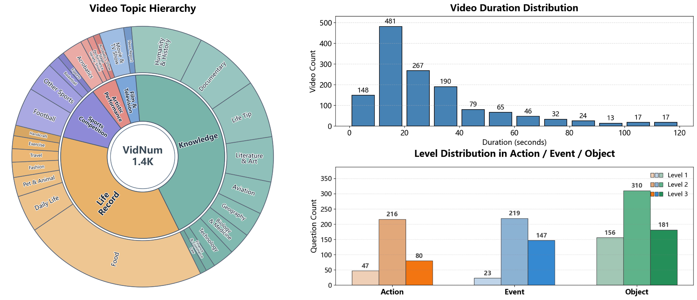
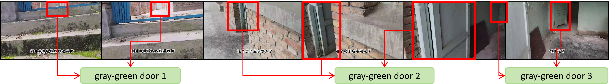
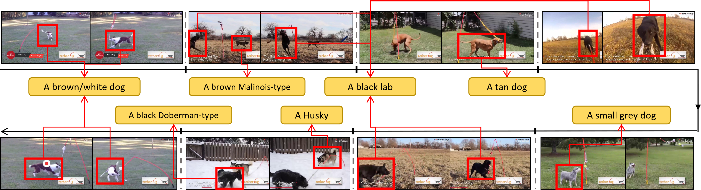
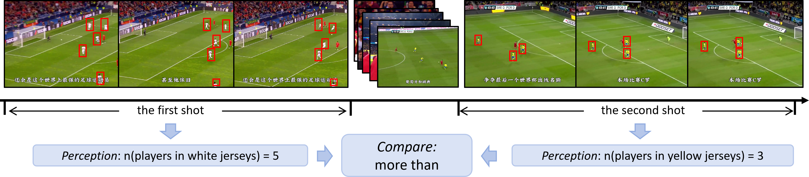
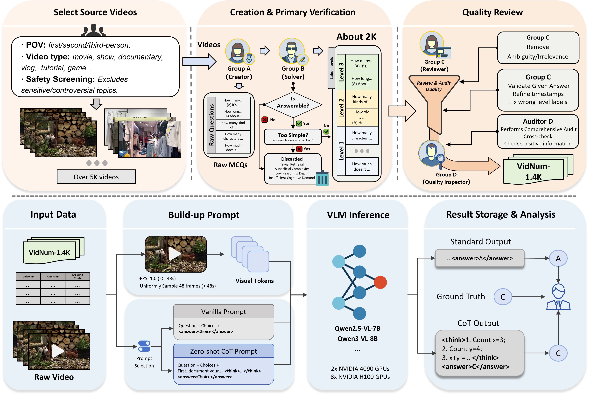
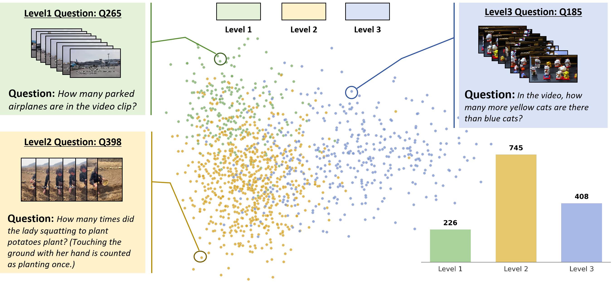

1,379 MCQs
Each question is grounded in an independent video clip (5s to 120s), with strict human annotation and verification.
Video-based Numerical Reasoning Benchmark
VidNum-1.4K is a strictly human-annotated benchmark with 1,379 video-question pairs across diverse real-world, documentary, and virtual-world videos. It evaluates progressive capability from direct counting to compositional numerical reasoning through Level 1, Level 2, and Level 3 tasks.
About

Our Dataset
Each question is grounded in an independent video clip (5s to 120s), with strict human annotation and verification.
The benchmark covers Object (647), Action (343), and Event (389) to test broad numerical video reasoning.
Videos span real-world, documentary/educational, and virtual-world content with high heterogeneity.
Level 1
Count a single type of object/action/event under minimal constraints. This tests stable temporal tracking and object permanence.
Level 2
Count multiple entity types or constrained attributes, often across multi-shot videos requiring robust re-identification.
Level 3
Perform temporally grounded arithmetic/comparison operations, moving from perception to multi-step logical deduction.
Demo Questions
Answer: D
Reasoning Sketch

Answer: C
Reasoning Sketch

Answer: A
Reasoning Sketch

Data Construction

Videos are curated under a two-tier topic hierarchy with five macro-categories: Knowledge, Life Record, Sports Competition, Artistic Performance, and Film & Television.
Group A creates timestamp-grounded numerical questions with a strict visual-description-only policy. Group B independently solves and filters ambiguous or prior-based questions.
Group C refines timestamps and validates reasoning relevance; Group D performs independent final audit. This process finalizes 1,379 verified pairs.
Discussion

Subpage 1
Detailed view of when CoT helps and when it hurts across levels and targets.

Subpage 2
Joint analysis of scaling behavior and representative failure patterns.

Subpage 3
Full NoCoT and ZeroShot-CoT prompts used in benchmark evaluation.
Subpage 4
How to download questions, run evaluation, and access full videos beyond GitHub limits.
Resources
Use the official benchmark JSONL file for reproducible VidNum-1.4K evaluation. Code is available on GitHub.